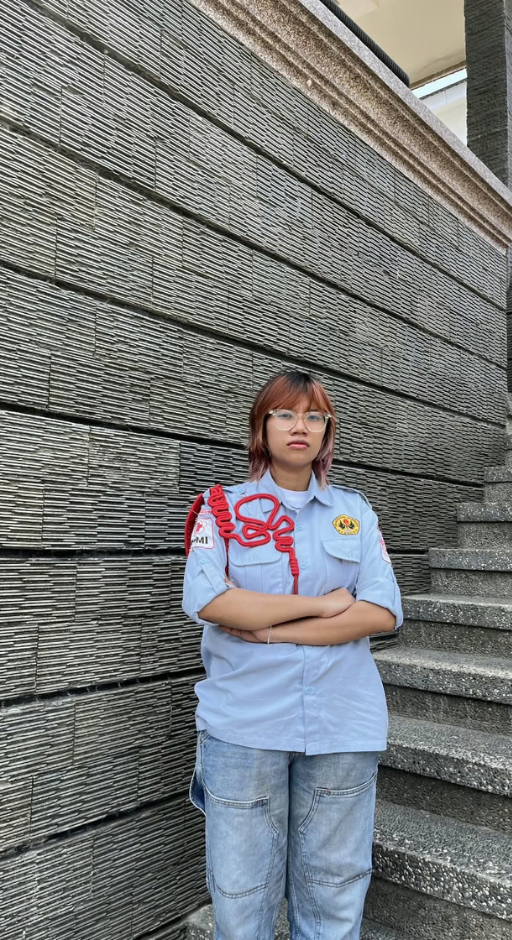
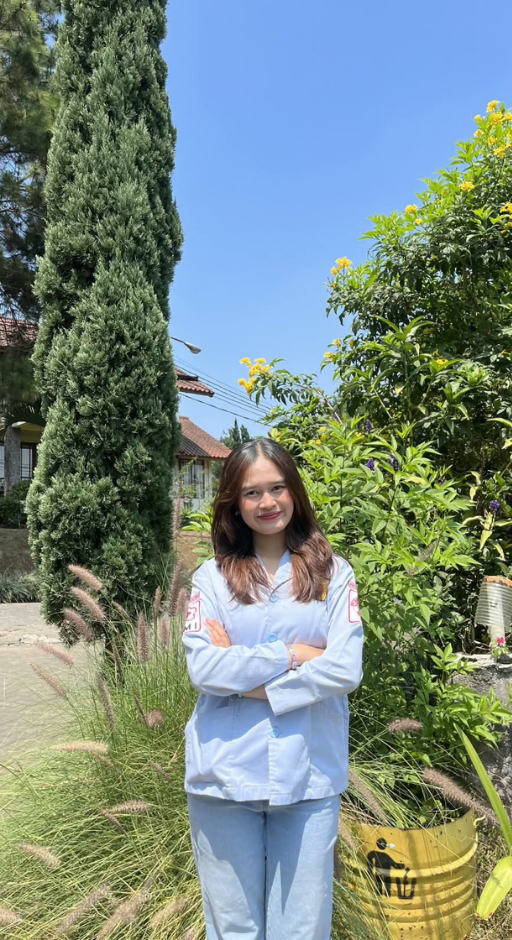
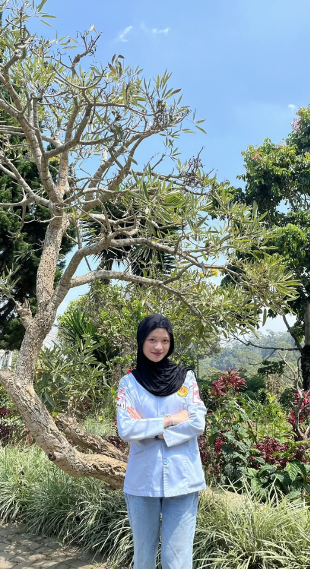
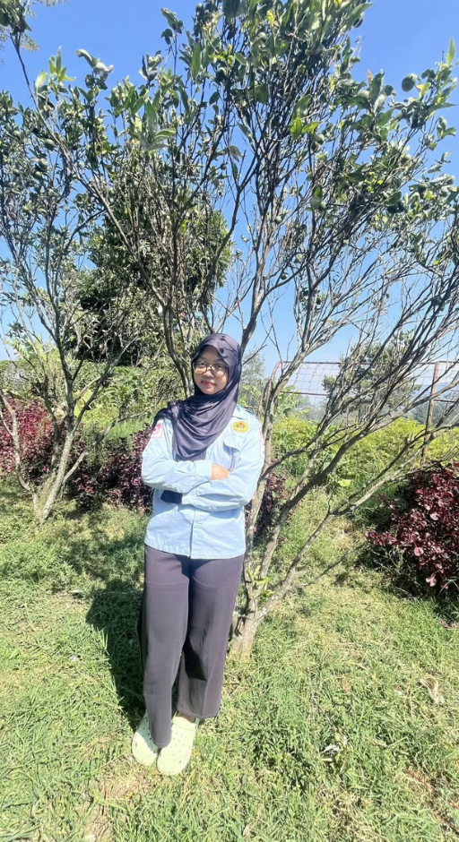
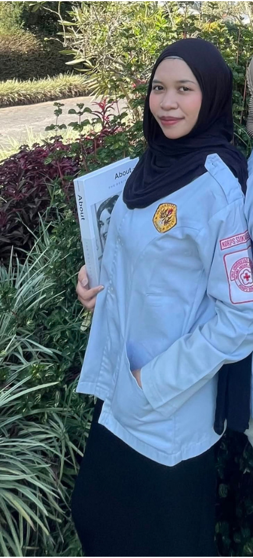
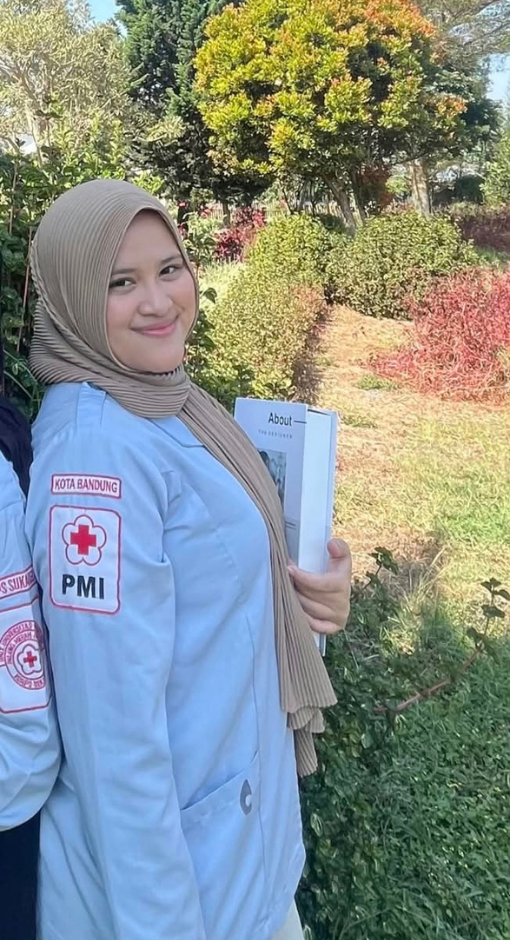
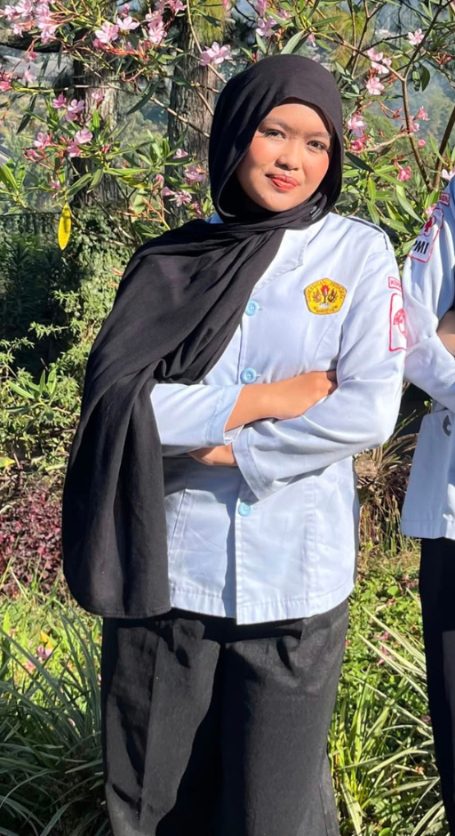
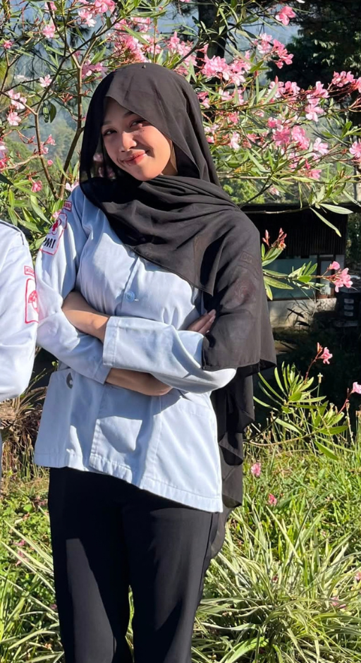
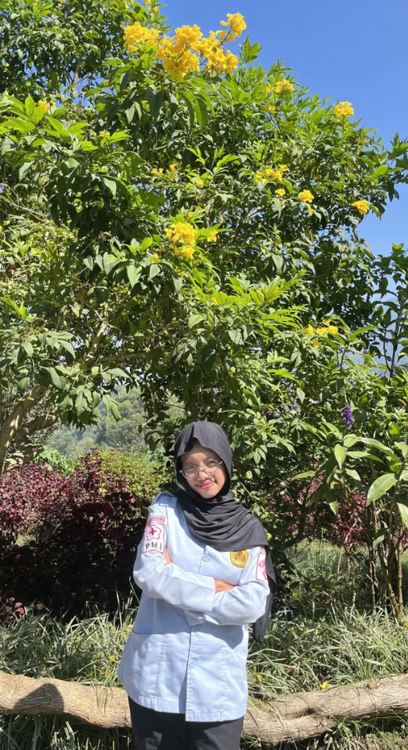

Kepengurusan
Struktur Organisasi
Kepengurusan KSR PMI Unit Universitas Pasundan.
DPH, Dewan Pengurus Harian

Komandan
Naisya Dzahrani Putri

Sekretaris
Sheira Aulia Salsabila

Bendahara
Nada Rohadatula'isy Asyikin

Koordinator HUMAS
Tiara
DPO, Dewan Pengurus Operasional
Koordinator Bidang DIKLAT
M. Rifqi Rajif
Anggota Bidang DIKLAT
M. Rafa Rizkiansyah

Koordinator Bidang LITBANG
Ghina Nadya Aqila

Anggota Bidang LITBANG
Hanina Dzikriya

Koordinator Bidang PPM
Tiara Purnamasari

Anggota Bidang PPM
Asti Sopianti

Koordinator Bidang SAPRAS
Nahiza Annida Apsari